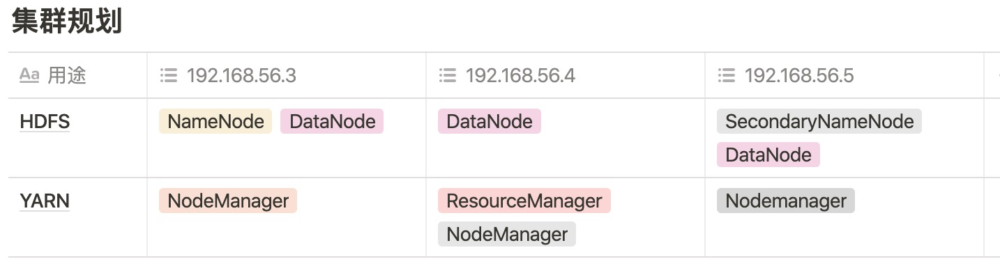
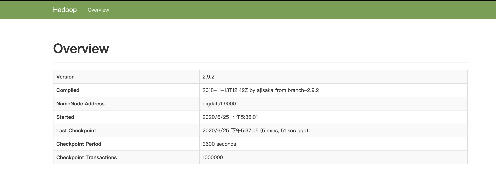

如何搭建一个Hadoop集群
在学习大数据系统时，搭建一个 Hadoop 是基本的操作，很多大数据上层的应用都依赖 HDFS，本文介绍一种搭建 Hadoop 集群的方法。
所需软件及环境如下：
- 本地服务器集群
- openjdk1.8
- hadoop-2.9.2
在之前我写过一篇搭建本地服务器集群的方法，如果有需要，可以参考这里搭建一个本地的服务器集群。
环境准备
在开始搭建 Hadoop 之前，还需要做一些准备。
首先，关闭服务器的防火墙，并且禁止开机启动，这样就不用在各个服务器上对端口进行控制。
$ systemctl stop firewalld.service
$ systemctl disable firewalld.service
然后需要定义一下服务器的 hostname，在集群内，直接使用 hostname 来替代机器进行操作，以 IP 为 192.168.56.3 的服务器为例（这是我的服务器集群的地址，具体看自己集群的 IP 配置）：
$ vi /etc/sysconfig/network
NETWORKING=yes
HOSTNAME=bigdata1
GATEWAY=192.168.56.2
同样编辑另外两台服务器，起名为 bigdata2 和 bigdata3。
然后编辑各个服务器的 /etc/hosts 文件，添加 hostname 到 IP 的映射：
$ vi /etc/hosts
192.168.56.3 bigdata1
192.168.56.4 bigdata2
192.168.56.5 bigdata3
最后，为了在宿主机上可以方便的访问各个服务器，同样也要编辑宿主机的 hosts 文件：
$ vi /etc/hosts
192.168.56.3 bigdata1
192.168.56.4 bigdata2
192.168.56.5 bigdata3
到这里，服务器集群的配置就完成了，接下来就开始配置 Hadoop 环境。
Hadoop 也依赖 Java 环境，所以首先需要配置 JDK，本文使用的是 openjdk1.8。
本文所有的软件都会安装到 /opt/module 目录下，如果没有这个目录，创建一个。
$ mkdir /opt/module
可以将下载好的 jdk 通过 scp 命令从宿主机拷贝到 服务器，然后解压到目标目录：
$ tar -zxvf openjdk-8u41-b04-linux-x64-14_jan_2020.tar.gz -C /opt/module/
解压完成后再配置环境变量：
$ vi /etc/profile
#Java config
export JAVA_HOME=/opt/module/java-se-8u41-ri
export PATH=$PATH:$JAVA_HOME/bin
$ source /etc/profile
$ java -version
Openjdk version "1.8.0_41"
OpenJDK Runtime Environment (build 1.8.0_41-b04)
OpenJDK 64-Bit Server VM (build 25.40-b25, mixed mode)
JDK 配置完成。
然后同样将 scp 命令将 hadoop 安装包拷贝到服务器，解压到 /opt/module 目录中：
$ tar -zxvf hadoop-2.9.2.tar.gz -C /opt/module/
同样配置环境目录
$ vi /etc/profile
#Hadoop config
export HADOOP_HOME=/opt/module/hadoop-2.9.2
export PATH=$PATH:$HADOOP_HOME/bin
export PATH=$PATH:$HADOOP_HOME/sbin
$ source /etc/profile
$ hadoop version
Hadoop 2.9.2
Subversion https://git-wip-us.apache.org/repos/asf/hadoop.git -r 826afbeae31ca687bc2f8471dc841b66ed2c6704
Compiled by ajisaka on 2018-11-13T12:42Z
Compiled with protoc 2.5.0
From source with checksum 3a9939967262218aa556c684d107985
This command was run using /opt/module/hadoop-2.9.2/share/hadoop/common/hadoop-common-2.9.2.jar
hadoop 的安装完成，到这里，单台机器的软件已经安装完成。
如果每台机器都要这样配置就太繁琐了，可以利用 rsync 将安装好的软件直接拷贝到其他的机器，这里当然也可以使用 scp 命令进行拷贝，但是 scp 命令每次都是全量拷贝，在文件很多时，拷贝的速度会很慢，而 rsync 是增量拷贝，只拷贝那些被修改了的文件，所以拷贝的速度会很快。
如果系统上，没有这个软件，就使用以下命令进行安装：
$ yum install rsync
安装完成后利用 rsync 将安装好的软件同步到另外两台服务器：
$ rsync -rvl /opt/module/ root@bigdata2:/opt/module
$ rsync -rvl /opt/module/ root@bigdata3:/opt/module
然后分别配置环境变量（其实 /etc/profile 文件也可以被同步到另外的服务器，这里为了演示，就没有直接同步过去）：
$ vi /etc/profile
#Java config
export JAVA_HOME=/opt/module/java-se-8u41-ri
export PATH=$PATH:$JAVA_HOME/bin
#Hadoop config
export HADOOP_HOME=/opt/module/hadoop-2.9.2
export PATH=$PATH:$HADOOP_HOME/bin
export PATH=$PATH:$HADOOP_HOME/sbin
$ source /etc/profile
到这里，所有软件安装完成。
集群规划
基础环境配置完成后，需要对集群中服务器做规划，让每台服务器承担不同的角色。
具体规划如下，最重要的 NameNode 放在第一台服务器上，yarn 的 ResourceManager 放在 第二台服务器上，SecondaryNamenode 则放在第三台服务器上。
具体规划如下：

集群配置
然后就可以根据上面的规划来配置集群，以 IP 为 192.168.56.3 的服务器为例。
Hadoop 的所有配置文件都在 etc/hadoop 目录下：
$ cd /opt/module/hadoop-2.9.2/etc/hadoop
首先配置 Hadoop 的核心文件，打开 core-site.xml，添加如下配置，确定 NameNode 所在的服务器：
$ vi core-site.xml
<property>
<name>fs.defaultFS</name>
<value>hdfs://bigdata1:9000</value>
</property>
<property>
<name>hadoop.tmp.dir</name>
<value>/opt/module/hadoop-2.9.2/data/tmp</value>
</property>
然后打开 [hadoop-env.sh](http://hadoop-env.sh) 配置 JDK:
$ vi hadoop-env.sh
export JAVA_HOME=/opt/module/java-se-8u41-ri/
然后接着配置 HDFS 相关，配置每个文件的保存的份数，同时配置 SecondaryNameNode 所在的服务器，编辑 hdfs-site.xml文件:
$ vi hdfs-site.xml
<property>
<name>dfs.replication</name>
<value>3</value>
</property>
<property>
<name>dfs.namenode.secondary.http-address</name>
<value>bigdata3:50090</value>
</property>
然后就开始配置 yarn：
$ vi yarn-env.sh
export JAVA_HOME=/opt/module/java-se-8u41-ri/
确定mapreduce 所用的算法，以及确定 ResourceManager 所在的服务器，编辑 yarn-site.xml:
$ vi yarn-site.xml
<property>
<name>yarn.nodemanager.aux-services</name>
<value>mapreduce_shuffle</value>
</property>
<property>
<name>yarn.resourcemanager.hostname</name>
<value>bigdata2</value>
</property>
然后配置一下 mapreduce:
$ vi mapred-env.sh
export JAVA_HOME=/opt/module/java-se-8u41-ri/
配置 mapreduce 任务在通过 yarn 来调度：
$ cp mapred-site.xml.template mapred-site.xml
$ vi mapred-site.xml
<property>
<name>mapreduce.framework.name</name>
<value>yarn</value>
</property>
最后还要做一个集群的配置，让各个服务器知道这个集群中有哪些服务器：
$ vi slaves
bigdata1
bigdata2
bigdata3
然后将配置同步到另外两台机器：
$ rsync -rvl /opt/module/hadoop-2.9.2/ root@bigdata2:/opt/module/hadoop-2.9.2
$ rsync -rvl /opt/module/hadoop-2.9.2/ root@bigdata3:/opt/module/hadoop-2.9.2
所有的配置到这里就完成了。
集群操作
接下来启动集群，首次启动集群需要对 NameNode 进行格式化：
$ cd /opt/module/hadoop-2.9.2
$ bin/hdfsnamenode-format
然后启动 hdfs，要在第一台服务器(IP: 192.168.56.3) 上启动：
$ sbin/start-dfs.sh
然后启动 yarn，在第二台服务器（IP：192.168.56.4）上启动：
$ sbin/start-yarn.sh
然后访问 http://192.168.56.5:50090/，如果看到如下的的界面，说明集群就启动成功了。

停止集群时通过如下命令停止就可以了：
$ sbin/stop-yarn.sh
$ sbin/stop-dfs.sh
文 / Rayjun